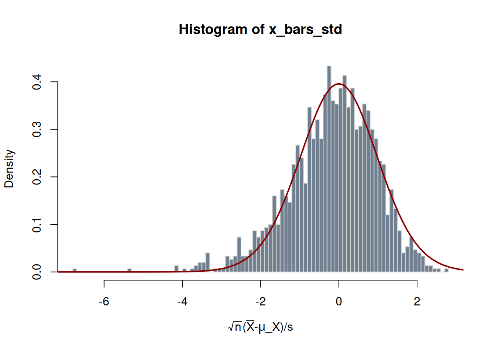
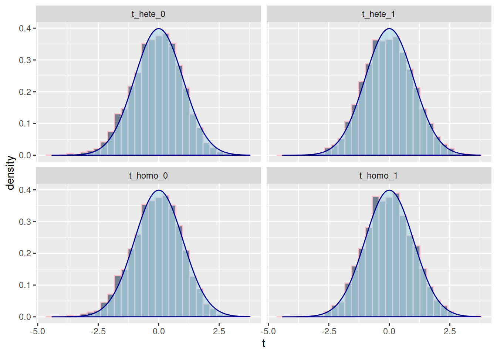
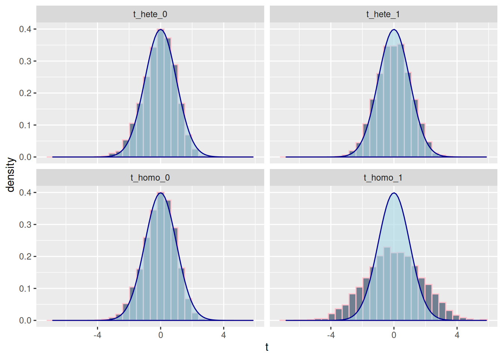

set.seed(5647382)
# Impostazione del numero di simulazioni
n_simulations <- 1500
# Impostazione della dimensione del campione (cioè `n`)
sample_size <- 30
# Inizializzazione dei vettori per memorizzare i risultati
# cioè gli X_bar e le standard deviation per ciascun campione
x_bars <- numeric(n_simulations)
s <- numeric(n_simulations)
# Parametri veri del modello
mu_X <- 1
sigma_X <- 1
# Esecuzione delle simulazioni
for (j in 1:n_simulations) {
# Generazione del campione
X <- mu_X + sigma_X*(rchisq(sample_size, df=3) - 3)/sqrt(6)
x_bars[j] <- mean(X)
s[j] <- sd(X)
}Simulazioni Monte Carlo
Le simulazioni Monte Carlo sono un metodo numerico spesso utilizzato per verificare le proprietà statistiche di stimatori in modelli econometrici. L’idea di fondo è quella di generare diversi campioni tratti da una ipotizzata popolazione statistica e di calcolare le stime su questi campioni. Utilizzando queste stime è possibile poi verificare le proprietà frequentiste degli stimatori.
Esempio: media campionaria
Iniziamo con un esempio molto semplice: la media campionaria. Sappiamo dalla teoria che se \(X_1, \dots, X_n\) sono delle variabili casuali indipendentemente e identicamente distribuite con \(E(X_i)=\mu_X<\infty\) e \(var(X)=\sigma_X^2<\infty\), allora
\(E(\bar{X})=\mu_X\)
\(\sqrt{n}(\bar{X}-\mu)/\sigma_X\xrightarrow{d} N(0,1).\) Inoltre, per \(s=\sqrt{\frac{1}{n-1}\sum_{i=1}^n (X_i-\mu_X)^2}\), avremo
\(\sqrt{n}(\bar{X}-\mu)/s \xrightarrow{d} N(0,1).\)
Nel caso in cui \(X_i\sim N(\mu_X, \sigma^2_X)\), \(i=1,\ldots,n\),
\(\sqrt{n}(\bar{X}-\mu)/\sigma_X \sim N(0,1),\) e
\(\sqrt{n}(\bar{X}-\mu)/s \sim t(n-1),\)
dove \(t(\nu)\) denota la distribuzione di student con \(\nu\) gradi di libertà. La differenza fra il caso in cui le osservazioni non hanno una distribuzione normale è che \(\bar{X}\) avrà esattamente una distribuzione normale (non approssimativamente normale come nel case 2.) e \(\sqrt{n}(\bar{X}-\mu)/s\) esattamente una distribuzione student-t.
Come possiamo verificare che queste proprietà siano effettivamente soddisfatte? Possiamo generare ripetutamente campioni di \(n\) osservazioni da altrettante variabili casuali e per ciascuno campione calcolare la media campionaria e la standard deviation. Ci aspettiamo che la media delle media, cioè la media degli \(\bar{X}\) calcolati sui campioni, sia approssimativamente uguale a \(\mu_X\) e che gli intervalli di confidenza “coprano” \(\mu_X\) il \(1-\alpha\)% delle volta. Nel caso in cui \(X_i\sim N(\mu_X, \sigma^2_X)\), \(i=1,\ldots,n\), la qualità della “copertura” non dipende dalla grandezza dei campioni, mentre quando dobbiamo fare use dell’approssimazione asintotica la “copertura” tenderà ad avvicinarsi a quella nominale al crescere del campione.
Il seguente codice conduce l’esperimento di montecarlo, simulando le \(X_i\) da una distribuzione \(\chi^2_{3}\) centrata per avere una media e una varianza specifica.
Verifichiamo la proprietà 1.
mean(x_bars) - mu_X[1] -0.001650921La differenza non è esattamente uguale a zero perché stiamo calcolando la media di 1500 medie. Se provassimo ad aumentare il numero di simulazioni, la differenza fra il vero valore \(\mu_X=1\) e la media delle medie si ridurrebbe, e sarebbe eventualmente uguale a zero quando n_simulations\(\to\infty\).
Andiamo a verificare la distribuzione di \(\bar{X}\).
## Utilità per annotare il grafico
library(latex2exp)
## Standardizzazione di X_bar
x_bars_std <- sqrt(sample_size)*(x_bars-mu_X)/s
## Histogramma di x_bars_std dovrebbe essere simile a quello di una t(n-1)
hist(x_bars_std,
border = "lightgray", col="slategray",
breaks = 100,
prob=TRUE,
xlab = TeX("\\sqrt{n}(\\bar{X}-\\mu_X)/s"))
## Aggiungiamo la densità di t(n-1)
rr <- range(x_bars_std)*1.15
xx <- seq(rr[1], rr[2], length.out=1000)
yy <- dt(xx, df=sample_size)
lines(x=xx, y=yy, col = "darkred", lwd = 2)
Come si vede la distribuzione di density di una \(t(n-1)\) (in rosso nel grafico) non approssima molto bene l’istogramma delle medie campionarie normalizzate. Per comprendere quanto sia problematico questo scostamento, possiamo calcolare gli intervalli di confidenza al 95% e vedere quanto spesso contengono \(\mu_X\).
ci_conf <- cbind(
x_bars - 1.96*s/sqrt(sample_size),
x_bars + 1.96*s/sqrt(sample_size))
# Calcolo delle proprietà degli intervalli di confidenza
coverage <- mean(ci_conf[, 1] <= mu_X & mu_X<=ci_conf[, 2])
cat("La copertura del'intervallo di confidenza al 95% per mu_X:", coverage, "\n")La copertura del'intervallo di confidenza al 95% per mu_X: 0.9213333 Soltanto il 92.1333333% dei campioni restituisce degli intervalli di confidenza che contengono \(\mu_X\). La regione della discrepanza è dovuta al fatto che abbiamo considerato campioni di dimensioni “piccole”, \(n=30\), mentre la teoria è basata sull’assunto che i campioni siano grandi, cioè \(n\to\infty\).
Exercise 1 Come cambiano i risultati in termini di copertura dell’intervallo di confidenza quando la dimensione dei campioni è \(n=200\)?
Exercise 2 Modificare il codice affinché i dati siano simulati \(X_i\sim N(\mu_X, \sigma^2)\), \(i=1,\ldots, n\). Come cambia la copertura degli intervalli di confidenza? Come è possibile spiegare questa differenza rispetto al caso in cui le variabili casuali hanno una distribuzione \(\chi^2\)?
Simulazioni Monte Carlo per regressione.
# Pacchetto per calcolare errori standard
library(sandwich)
# Impostazione del numero di simulazioni
n_simulations <- 5000
# Impostazione della dimensione del campione
sample_size <- 150
# Inizializzazione dei vettori per memorizzare i risultati
betahat_0 <- numeric(n_simulations)
betahat_1 <- numeric(n_simulations)
# Matrici contengono gli errori standard.
# La prima colonna contiene errore standard sotto
# l'assunzione di omoschedasticità; la seconda colonna
# contiene l'errore standard robusto
se_0 <- matrix(, nrow = n_simulations, ncol = 2)
se_1 <- matrix(, nrow = n_simulations, ncol = 2)
# "Veri" coefficienti del modello
beta_0 <- 2
beta_1 <- 1
# Esecuzione delle simulazioni
for (i in 1:n_simulations) {
# Generazione dei dati
x <- rnorm(sample_size)
u <- (rchisq(sample_size, df = 3)-3)/sqrt(2*3)
y <- beta_0 + beta_1 * x + u
# Stima del modello
model <- lm(y ~ x)
# Salvataggio delle stime dei parametri
betahat_0[i] <- coef(model)[1]
betahat_1[i] <- coef(model)[2]
# Salvataggio degli errori standard
se_homo = sqrt(diag(vcov(model)))
se_hete = sqrt(diag(vcovHC(model, type="HC1")))
se_0[i, 1] <- se_homo[1]
se_1[i, 1] <- se_homo[2]
se_0[i, 2] <- se_hete[1]
se_1[i, 2] <- se_hete[2]
}
# Costruzione data.frame
mc1 <- data.frame(t_homo_0 = (betahat_0-beta_0)/se_0[,1],
t_homo_1 = (betahat_1-beta_1)/se_1[,1],
t_hete_0 = (betahat_0-beta_0)/se_0[,2],
t_hete_1 = (betahat_1-beta_1)/se_1[,2]
)library(ggplot2)
library(tidyr)
library(dplyr)
mcg <- gather(mc1, key = "coefficient", value = "t")
ggplot(mcg, aes(x=t)) +
geom_histogram(aes(y=..density..),
col = "pink", fill = "slategray") +
stat_function(fun = dnorm,
geom = "polygon",
col = "darkblue",
fill = "lightblue",
alpha=0.65) +
facet_wrap(~coefficient)
Tutte le distribuzioni delle statistiche sembrano abbastanza simili a quelle di una normale standard, cioè una normale cone media zero e varianza unitaria (nel Figure 1 in blue). Un modo più preciso per esaminare la qualità dell’approssimazione normale consiste nel contare il numero di intervalli di confidenza che contengono i veri valori dei coefficienti. Usando le statistiche \(t\), ciò equivale a contare il numero di statistiche che sono minori in valore assoluto di \(1.64\) e \(1.96\). Se l’approssimazione è soddisfacente, dovrebbero essere rispettivamente il 10% e il 5% del totale.
mc1 |> summarise_all(.funs = function(x) mean(abs(x)<1.64)) t_homo_0 t_homo_1 t_hete_0 t_hete_1
1 0.8888 0.9012 0.8902 0.8954mc1 |> summarise_all(.funs = function(x) mean(abs(x)<1.96)) t_homo_0 t_homo_1 t_hete_0 t_hete_1
1 0.9462 0.951 0.9464 0.9474Le “coperture” degli intervalli di confidenza sono prossimi ai loro valori teorici.
Note
La percentuale dei campioni per il quale la statistica \(t\) è maggiore in valore assoluto di \(1.96\) (e \(1.64\)) coincide con le dimensioni effettiva del test di significatività (quelle teoriche sono del \(5%\) e del \(10\))
mc1 |> summarise_all(.funs = function(x) mean(abs(x)>1.64)) t_homo_0 t_homo_1 t_hete_0 t_hete_1
1 0.1112 0.0988 0.1098 0.1046mc1 |> summarise_all(.funs = function(x) mean(abs(x)>1.96)) t_homo_0 t_homo_1 t_hete_0 t_hete_1
1 0.0538 0.049 0.0536 0.0526Modifichiamo adesso il codice e generiamo il modello con errori eteroschedastici.
set.seed(373982)
# Impostazione del numero di simulazioni
n_simulations <- 5000
# Impostazione della dimensione del campione
sample_size <- 150
# Inizializzazione dei vettori per memorizzare i risultati
betahat_0 <- numeric(n_simulations)
betahat_1 <- numeric(n_simulations)
# Matrici contengono gli errori standard.
# La prima colonna contiene errore standard sotto
# l'assunzione di omoschedasticità; la seconda colonna
# contiene l'errore standard robusto
se_0 <- matrix(, nrow = n_simulations, ncol = 2)
se_1 <- matrix(, nrow = n_simulations, ncol = 2)
# "Veri" coefficienti del modello
beta_0 <- 2
beta_1 <- 1
# Esecuzione delle simulazioni
for (i in 1:n_simulations) {
# Generazione dei dati
x <- rnorm(sample_size)
u <- sqrt(x^2)*(rchisq(sample_size, df = 3)-3)/sqrt(2*3)
# Nota: Var(u|x) = E(u^2|x) = x^2
# Var(u) = E(E(u^2|x)) = E(x^2) = 1
y <- beta_0 + beta_1 * x + u
# Stima del modello
model <- lm(y ~ x)
# Salvataggio delle stime dei parametri
betahat_0[i] <- coef(model)[1]
betahat_1[i] <- coef(model)[2]
# Salvataggio degli errori standard
se_homo = sqrt(diag(vcov(model)))
se_hete = sqrt(diag(vcovHC(model, type="HC1")))
se_0[i, 1] <- se_homo[1]
se_1[i, 1] <- se_homo[2]
se_0[i, 2] <- se_hete[1]
se_1[i, 2] <- se_hete[2]
}
# Costruzione data.frame
mc1 <- data.frame(t_homo_0 = (betahat_0-beta_0)/se_0[,1],
t_homo_1 = (betahat_1-beta_1)/se_1[,1],
t_hete_0 = (betahat_0-beta_0)/se_0[,2],
t_hete_1 = (betahat_1-beta_1)/se_1[,2]
)mcg <- gather(mc1, key = "coefficient", value = "t")
ggplot(mcg, aes(x=t)) +
geom_histogram(aes(y=..density..),
col = "pink", fill = "slategray") +
stat_function(fun = dnorm,
geom = "polygon",
col = "darkblue",
fill = "lightblue",
alpha=0.65) +
facet_wrap(~coefficient)
Dall’analisi del grafico in Figure 2 ci accorgiamo che l’approssimazione normale “funziona” con gli errori standard validi per eteroschedasticità mentre è pessima sotto omoschedasticità.
La verifica della copertura degli intervalli mostra chiaramente quanto sia problematico non utilizzare gli errori standard robusti.
mc1 |> summarise_all(.funs = function(x) mean(abs(x)<1.64)) t_homo_0 t_homo_1 t_hete_0 t_hete_1
1 0.901 0.6436 0.896 0.8742mc1 |> summarise_all(.funs = function(x) mean(abs(x)<1.96)) t_homo_0 t_homo_1 t_hete_0 t_hete_1
1 0.9492 0.7254 0.946 0.9366